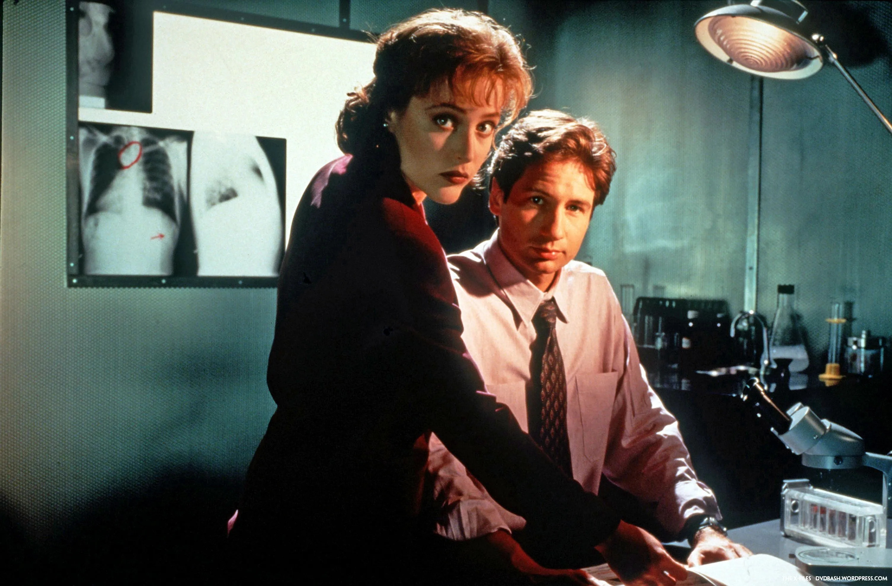

- 

Two FBI agents, Fox Mulder and Dana Scully work in an unassigned detail of the bureau called the X-Files investigating cases dealing with unexplained paranormal phenomena. Mulder, a true believer, and Scully, a skeptic, perceive their cases from stand points of science and the paranormal.